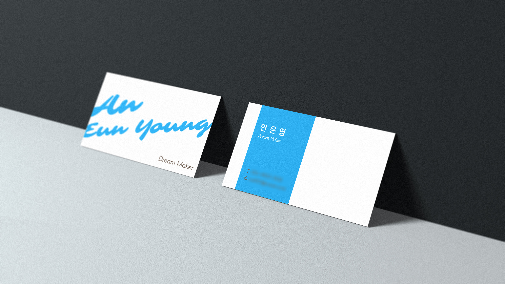
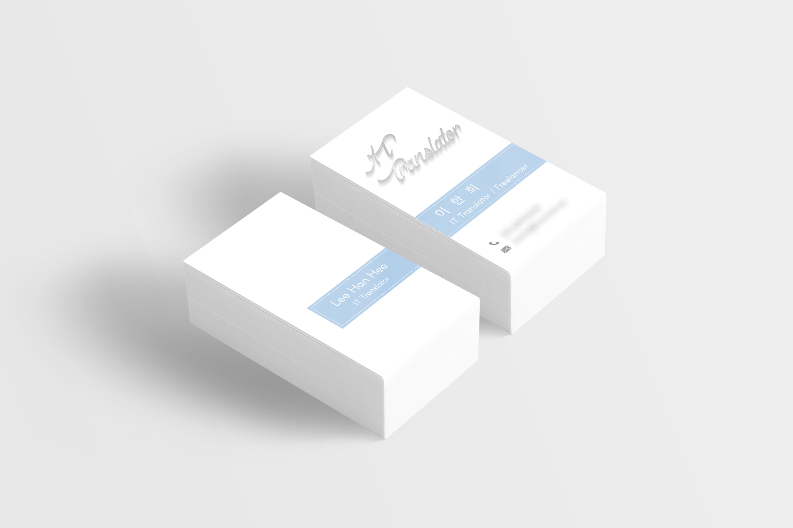

Personal
요청사항
- -. Business: 교사
- -. 블루톤 요청
- -. 사용처: 명함
디자인
- "교사"라는 타이틀을 조금 더 포괄적 의미를 닮은 "Dream Maker"로 하여 맑은 날 하늘색을 담은 로고입니다. 하늘색을 메인색으로 하여 갈색을 포인트 색상으로 사용하였습니다. 워드마크로는 우아한 느낌의 폰트로 이름을, 산 셰리프 폰트로 조화되어 깔끔하고 지적인 무드를 담았습니다.
Requirements
- -. My client's business: a teacher
- -. blue scheme was preferred.
- -. Application: business cards
Design Concept
- Combination of white and blue standing for sky on a clear day is used for happiness because my client's title is a teacher, a dream maker. And brown color standing for dependability is used for the title or my client's information. As for fonts, an elegant font is used for a remarkable impact of my client's name; neat San Serif fonts are used in general.

요청사항
- -. Business: IT 번역가
- -. 사용처: 명함
디자인
- IT 계열이어서 블루톤과 명함 정보를 아이콘 형태로, 영문 번역을 아날로그 종이 질감과 script 폰트로 담은 명함 디자인입니다.
Requirements
- -. My client's business: an English IT translator
- -. Application: business cards
Design Concept
- The business card contains two keywords, "IT", and "translation". As for IT, blue tone and icons for smart mood and experienced shapes to the field. The print on rough textured paper and the font of script contain Eng. traslation in analog mood including the environment at that time.
